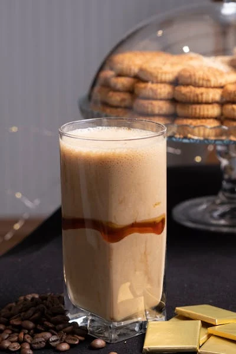

Breakfast Shake

Description
Whether you are in a hurry or need a quick pick-me-up, this delicious
shake is a fantastic choice! With the calories and protien to start the day
off right, you won't have any regrets after consuming this well balanced shake!
Ingredients
- 1 Cup Milk
- 1/4 Cup Peanut Butter
- 1/2 Cup Greek Yogurt - Plain
- 1 Banana
- 1 Scoop Chocolate Protien Powder
- Substitue Banana and/or Chocolate Protien Powder for other
fruits and flavors if you so desire!
Steps
- Combine ingredients in blender
- Blend until you have reached a smooth, even consistency
- Enjoy! It really is that easy!